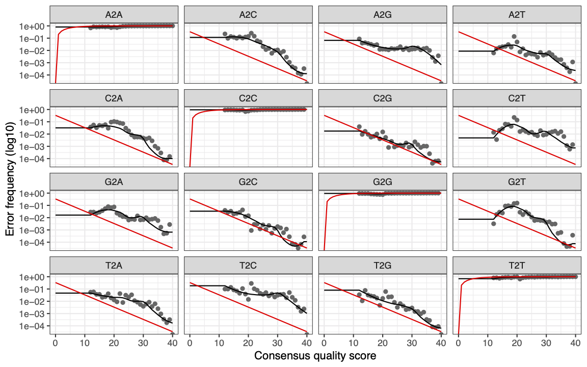

Chapter 9 Identification of ASVs
9.1 Generate an error model
First we need to model the error rates of our dataset using both the forward and reverse reads. Each dataset will have a specific error-signature with errors introduced by PCR amplification and sequencing.
errF <- learnErrors(filtFs, multithread = TRUE)
errR <- learnErrors(filtRs, multithread = TRUE)We can use the plotErrors function to check the estimated error rates.
plotErrors(errF, nominalQ = TRUE)You will see the
Warning messages: 1: Transformation introduced infinite values in continuous y-axis 2: Transformation introduced infinite values in continuous y-axis
Do not worry about these warning messages. This is a message from the plotting function to let you know that there were some zero values in the data plotted (which turn into infinities on the log-scale). This is expected, it results from the fact that not every combination of error type (e.g. A->C) and quality score (e.g. 33) is observed in your data, which is normal.
Interpreting the plots.

The error rates for each possible transition (e.g. A→C, A→G) are shown
Red line - expected based on the quality score. (These are plotted when
nominalQ = TRUEis included in the plot command)Black line - estimate
Black dots - observed
What we are expecting to see here is that the observed match up with estimates. Here we can see that the black dots track well with the black line. We can also see that the error rates drop with increasing quality score as we would expect. Sanity checks complete, we can proceed with the analysis.
- If you are worried about what your error plots look like when you fit your own dataset, one possible way to to improve the fit is to try increasing the number of bases the function is using (the default is 100 million).
9.2 Dereplication
The next step is to dereplicate identical reads. This is a common step in many workflows used for processing amplicons. This saves time and processing power as indentical reads are collapsed together. For example instead of processing 100 identical sequences, only one is processed but the original number (i.e. 100) is associated with it.
exists <- file.exists(filtFs)
# check that all the samples are still present after filtering
derepFs <- derepFastq(filtFs[exists], verbose=TRUE)
derepRs <- derepFastq(filtRs[exists], verbose=TRUE)
# Name the derep-class objects by the sample names
names(derepFs) <- sample.names[exists]
names(derepRs) <- sample.names[exists]9.3 Inferrence of ASVs
Now we are ready to infer the ASVs in our dataset. To do this DADA2 uses the error models created above to infer the true sample composition (follow this link for more details).
Here we will run the inference algorithm on single samples to save time but it is also possible to run samples together in pseudo-pools to increase the ability to identify ASVs of low abundance. Low abundance ASVs in a sample may be filtered out when run separately but if they are found in higher numbers in another sample then the chance of that ASV being real increases. Pseudo-pooling increases the chances of these “real” low abundance ASVs being retained within samples. Whether or not to use the pseudo-pooling option will depend on your dataset and experimental design (see https://benjjneb.github.io/dada2/pseudo.html#Pseudo-pooling for more information).
dadaFs <- dada(derepFs, err = errF, multithread = TRUE)
dadaRs <- dada(derepRs, err = errR, multithread = TRUE)It is important to note that you want to run the error and inference steps on datasets generated from a single Illumina run. Data generated from different runs can have different error structures.
9.4 Merging paired end reads
Up until now we have carried out all filtering, error correction and inference on the forward and reverse reads separately. It is now time to merge the two files. By default the minimum overlap allowed between the two samples is 12 bp.
mergers <- mergePairs(dadaFs, derepFs, dadaRs, derepRs, verbose=TRUE)9.5 Making our ASV matrix
Now it is time to make the counts table. Each column represents a single ASV and each row is an individual sample.
seqtab <- makeSequenceTable(mergers)
dim(seqtab) Q. How many ASVs are in our matrix?
9.6 Chimera detection and removal
The last step in generating our ASV matrix is to detect and remove any chimeric sequences.
Chimeric sequences are formed when two or more biological sequences joined together. This is fairly common in amplicon sequencing. DADA2 uses a method whereby it combines the left and right segments of abundant reads and compares these with lower abundant sequences. Any low abundant sequences that match are removed.
seqtab.nochim <- removeBimeraDenovo(seqtab, method="consensus",
multithread=TRUE, verbose=TRUE)
dim(seqtab.nochim)Q. How many ASVs remain after filtering out chimeras?
Although this is a large proportion of sequence variants it should be a smaller proportion of the total sequences.
sum(seqtab.nochim)/sum(seqtab)In these data ~ 17% of the merged sequence reads were identified as chimeric.
Check the range of ASV lengths:
table(nchar(getSequences(seqtab.nochim)))Sequences that are much longer or shorter than the expected amplicon length could be the result of non-specific priming, and can be removed from your sequence table (e.g. seqtab.len <- seqtab[,nchar(colnames(seqtab)) %in% 150:180]). This is analogous to “cutting a band” in-silico to get amplicons of the targeted length, e.g. the above command would remove amplicons between 150 bp and 180 bp. This is dependent on the amplicon and you should only remove these if you do not expect any length variation, or after further investigation of what these short or long sequences are. For this example we will proceed without any amplicon length filtering.
9.7 Sequence tracking sanity check
The last thing to do in this section is to track the number of sequences through the pipeline to check whether everything has run as expected and whether there are any steps where we loose a disproportionate number of sequences. If we end up with too few reads to run further analysis we can use this table to identify any step which might require further investigation and optimisation.
getN <- function(x) sum(getUniques(x))
track <- cbind(out, sapply(dadaFs, getN),
sapply(dadaRs, getN),
sapply(mergers, getN),
rowSums(seqtab.nochim))
colnames(track) <- c("input", "filtered",
"denoisedF", "denoisedR",
"merged", "nonchim")
rownames(track) <- sample.names
track